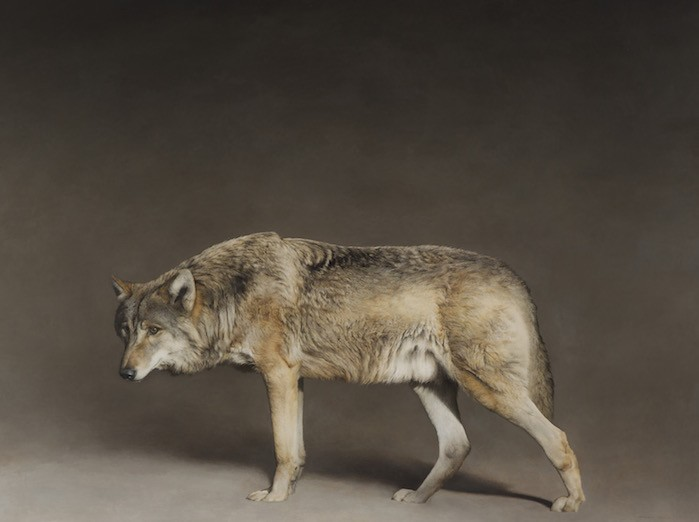
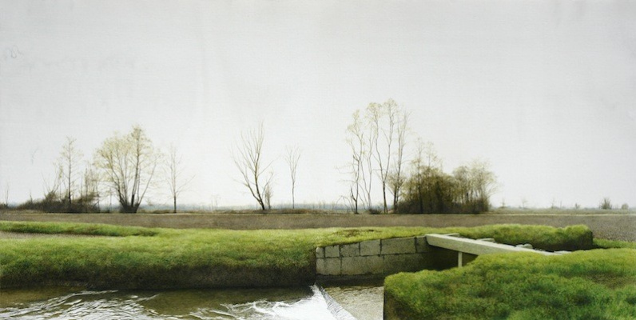
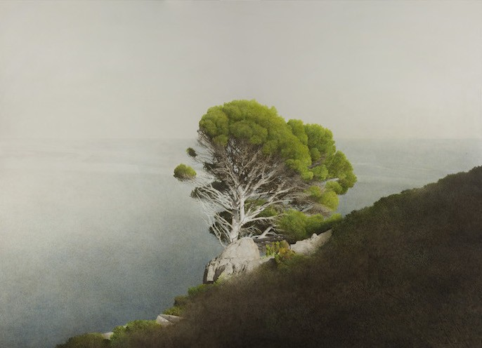
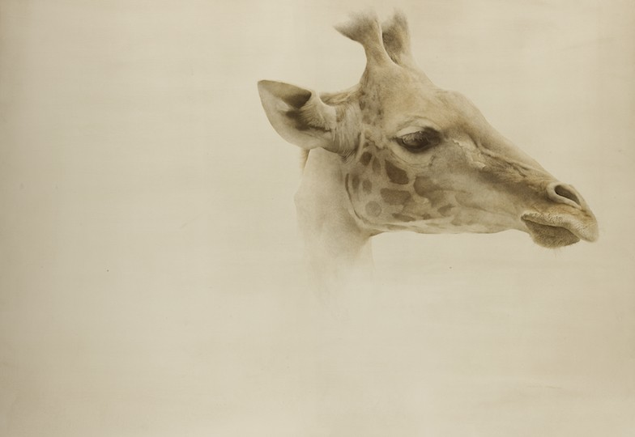

Только природа – и ничего лишнего. Искусство созерцания от художника из Италии
В наше время сложно кого-либо удивить способом самовыражения в искусстве. Артхив регулярно рассказывает вам о людях, которые используют в своем творчестве самые разнообразные, подчас очень неожиданные материалы и техники. И сейчас кем-то из ряда вон выходящим уже кажется художник, пишущий реалистичные картины в «архаичной» технике. Представляем вам Марцио Тамера (Marzio Tamer), который умеет удивлять.

Марцио Тамер родился в 1964 году в городе Скио на севере Италии и, как ни сложно в это поверить, у него нет никакого специального художественного образования. Уже много лет Тамер живет и работает в Милане и выставляется в музеях по всему миру. Свои ранние работы он писал акриловыми красками, но в какой-то момент открыл для себя яичную темперу. Эта многовековая техника, требующая пристального внимания и кропотливой работы, стала идеальным выбором для Тамера. Он остается верным темпере уже более 20 лет, хотя иногда и позволяет себе экспериментировать. К примеру, в 2002 году художник начал осваивать акварель, а именно технику «сухой кисти», для которой необходимо много терпения и достаточно высокий уровень мастерства.
  Единственное, что остается неизменным в творчестве Марцио Тамера, — это его сюжеты. В его художественной вселенной не существует людей, автомобилей и электропроводов. Здесь безраздельно властвует природа. И редкие здания, порой появляющиеся на картинах художника, кажутся ее неотъемлемой частью. Работы Тамера — будь то пейзаж с одиноким деревом, огромный носорог или крошечная птичка — ошеломляют зрителя своей тишиной. При взгляде на них возникает невольное желание замереть и не издавать никаких звуков. Своих животных Тамер чаще всего пишет на пустом фоне, в некоем условном пространстве, лишая их всякой маскировки и приковывая максимум внимания зрителя к непосредственным героям. И, несмотря на кажущуюся простоту, картины Тамера невероятно поэтичны и эмоциональны.
Автор: Евгения Сидельникова19 АВГУСТА